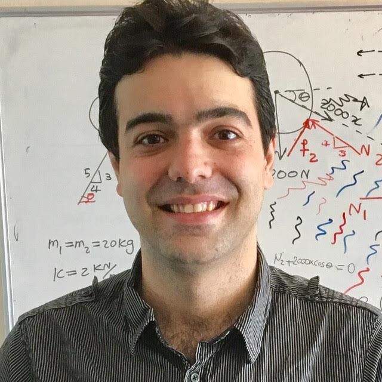

Asghar Aryanfar - Lab of Energy Materials and Sustainability (LEMS)
|  | Asghar Aryanfar Visiting Researcher Email: aryanfar at caltech dot edu |
{kind=link}
Bio:
I am Assistant Professor of Mechanical Engineering at Bogazici University  as well as Visiting Researcher at Caltech
as well as Visiting Researcher at Caltech  . I received the BSc in Civil and Mechanical Engineering (double major, top 2%) from Sharif University of Technology
. I received the BSc in Civil and Mechanical Engineering (double major, top 2%) from Sharif University of Technology  in 2009 and the MSc and PhD in Mechanical Engineering from California Institute of Technology , in 2010 and 2015, respectively. Previously I was Assistant Professor at American University of Beirut (’19-’22) and Lecturer at Bahçeşehir University (’16-’19) and prior to that I was Postdoctoral Associate at UCLA Materials Science department (’15-’16). My research has been in developing multi-physics/chemistry methods and materials for energy storage, conversion, transport and sustainability. Current projects include analysis and design of state-of-the-art sustainable rechargeable batteries and prediction of heterogeneous cracking behavior for membranes/clads exposed to extreme states.
in 2009 and the MSc and PhD in Mechanical Engineering from California Institute of Technology , in 2010 and 2015, respectively. Previously I was Assistant Professor at American University of Beirut (’19-’22) and Lecturer at Bahçeşehir University (’16-’19) and prior to that I was Postdoctoral Associate at UCLA Materials Science department (’15-’16). My research has been in developing multi-physics/chemistry methods and materials for energy storage, conversion, transport and sustainability. Current projects include analysis and design of state-of-the-art sustainable rechargeable batteries and prediction of heterogeneous cracking behavior for membranes/clads exposed to extreme states.
Team:
current: Semih Can (Texas A&M), Selin Bardak, Bugracan Bozkurt, M Kulak (TU Munich), Ayse Cetinler (PT Milan), Eren Ozcan (ENSTA Paris - U Shanghai), Trina Dhara (Cornell) , Beste Kara, Mounir El Skafi (Oxford) ,
past: J Paczesny (ICHF Warsaw), B Celik (U Wisconsin), M Yamani (AUB) , J Marian (UCLA), P Mukherjee (Purdue), T Cheng (Soochow) , I Şanal (BAU) , SR Damadi (U Tabriz) , MG Kakroudi (U Tabriz), J Greer (Caltech) , B Yildiz (MIT) , A Van der Ven (UCSB) , D Xu (OSU) , M Youssef (AUC) , J Yang (EPFL) , AJ Colussi (Caltech) , V Viswanathan (CMU) , D Saad (Stanford) , S Medlej (AUB) , Y Ghamlouche (AUB) , J Jundi (TUM), AR El Tallis (Columbia) , M Khoury (AUB).
Travels:
Jul’25: Talk at Nucleus conference, Saint Petersburg, Russia
 .
.
May’25: Talk at EMRS conference at Strasbourg, France
 .
.
Sep’24: Talk at the EMRS conference at Warsaw, Poland
 .
.
Sep’24: Visiting Oleg Levin's Lab, Saint Petersburg, Russia
.
Sep’22: Talk in the EMRS conference at Warsaw, Poland
.
Sep’22: Talk in the QUENCH workshop (travel grant awarded) at KIT
 , Karlsruhe, Germany
, Karlsruhe, Germany  .
.
May’22: Talk in the Electrochemical Society Conference, Vancouver, CA
 .
.Oct’21: Session Chair and Talk, MRS Conference, Boston, MA
 .
.Jun’21: Talk at ECS Confernce, San Francisco, CA
. Apr’21: Talk on MRS Conference (Online).
Jan’21: Talk in the Intelligent Decision Science conference, Istanbul, Turkey
 .
. May’19: Talk (sponsored) at American University of Beirut, Beirut, Lebanon
 .
. Aug’17: Talk (sponsored) at QUENCH workshop (IAEA), KIT, Karlsruhe, Germany
. Aug’16: Talk at Sadoway group, Massachusetts Institute of Technology
 , Cambridge, MA .
, Cambridge, MA . Jun’16: Talk at EMN Conference, Prague, Czech Republic
 .
. May’16: Talk (sponsored) at EPFL Mechanical Engineering department, Laussane, Switzerland
 : Engineering Electrochemical Materials for Energy Storage and Sustainability: From Rechargeable Batteries to Power Plants
: Engineering Electrochemical Materials for Energy Storage and Sustainability: From Rechargeable Batteries to Power Plants Apr’16: Talk on International Congress on Advances in Nuclear Power Plants ICAPP 2016, San Francisco, CA
. Mar’16: Talk (sponsored) at Tesla
 , Palo Alto, CA .
, Palo Alto, CA .Nov’15: Two Talks (sponsored) at Apple
 , Cupertino, CA CA .
, Cupertino, CA CA . Sep’15: Talk (sponsored) at Bilkent University Mechanical Engineering department, Ankara, Turkey
. May’15: Talk at Electrochemical Society Conference (ECS), Chicago, IL
: Three Dimensional Modeling of Dendrite Growth in Rechargeable Lithium Metal Batteries Dec’14: Talk at Bazant group, Massachusetts Institute of Technology
, Cambridge, MA . Jun’14: Talk (sponsored) at
 Corporation , Hillsboro, OR .
Corporation , Hillsboro, OR . May’14: Talk at Electrochemical Society Conference (ECS), Orlando, FL
. Apr’14: Talk at Materials Research Society Conference (MRS), San Francisco, CA
. Dec’13: Talk at Materials Research Society Conference (MRS), Boston, MA
.Oct’12: Talk at Electrochemical Society Conference (ECS), Honolulu, Hawaii
. Aug’12: First prize recipient, Novel self-sustaining sanitation system, Bill and Melinda Gates Foundation, Seattle, WA
: [FastCompany] [Reuters] [Time] [Economist]
Highlights:
July’23: I have been rated as the best instructor in the department. Full report is here! and the summary screenshot is below:
Jan’17: Caltech News coverage: Building Better Batteries. [Link]

May’13: CNN Interview , featured design in SolidWorks: novel closed-loop sanitation system. [Link]
2009: Rank 5/120: Mechanical Engineering Class, Sharif University of Technology
 .
.
2008: Rank 2/110: Civil Engineering Class, Sharif University of Technology
.
2004: Rank 78/500,000+: National University entrance exam, Iran
 .
.